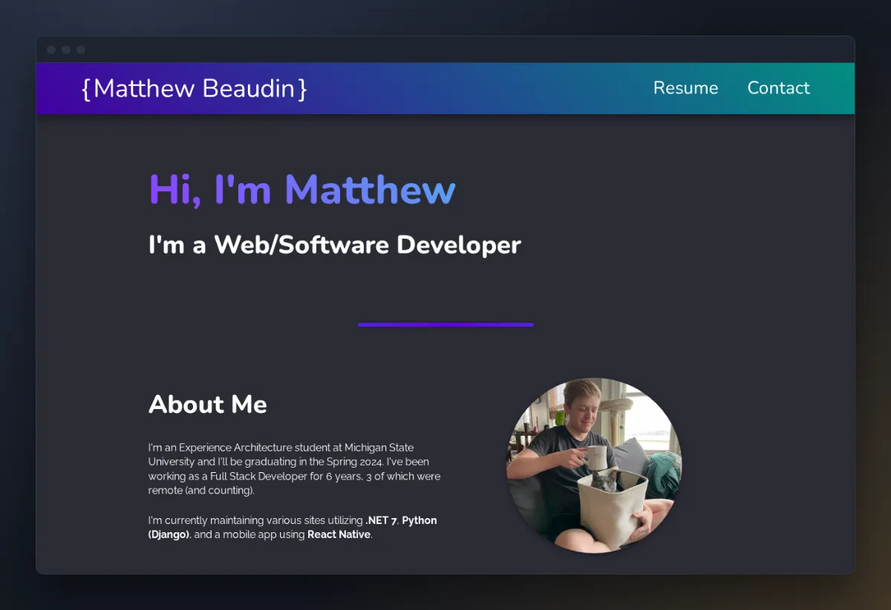
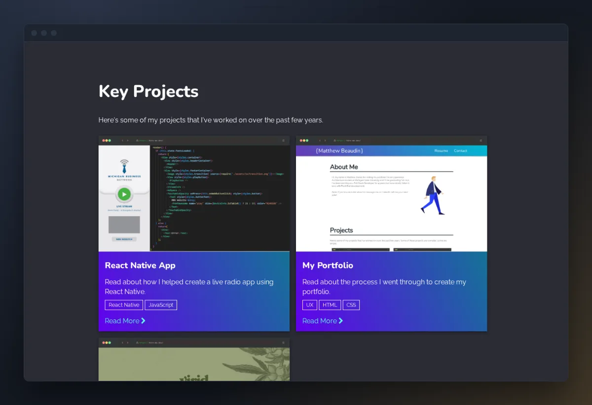
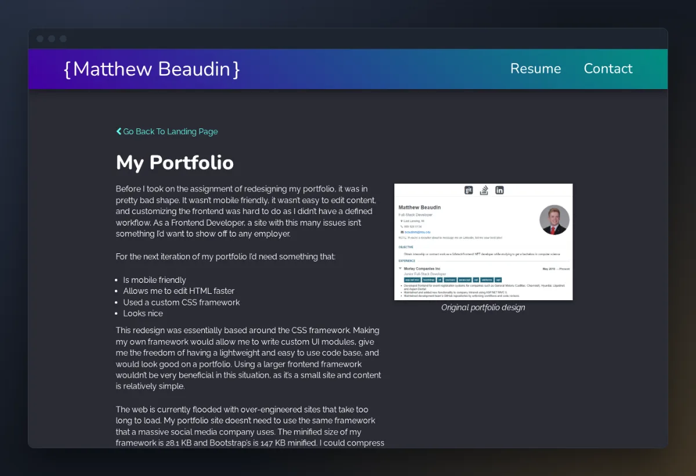

This portfolio



Situation
Before the redesign, my portfolio was in pretty bad shape. It wasn’t mobile friendly, editing content was a pain, and I had no defined workflow for changing the frontend. As a frontend developer, that wasn’t a site I wanted to show an employer.
Task
- Update my portfolio to show off projects I was proud of at the time
- Make it mobile friendly and make it look good
- Write my own small CSS framework instead of pulling in a big one
Action
In 2020 I rebuilt the site as plain HTML pages styled by a small SCSS framework I wrote myself, with its own row and column grid. The hardest problem was layout inconsistencies between pages. I purposely wrote the CSS to be simple and foolproof: a few classes that always behave the same way. That proved to be a good idea, because it’s very easy to add content and have it look consistent with everything else. In 2024 I refreshed the fonts, colors and spacing and added a case study for the MBN radio app.
Result
The site looks a lot better than what it replaced, but under the hood not much changed. There’s still no templating and no real automation, and every page is raw HTML with its own copy of the nav and footer. I planned on writing more, but I stopped updating it once I entered the field after graduating from Michigan State University. I still like the general design, but the content did not age well.
Work in progress
Now I’m motivated to fix it up and refresh the look of the site. I’m adding my more recent, more technical projects and holding them to a higher standard than the old ones. I still want to find a way to render the content from templates instead of writing everything in raw HTML. The site is a work in progress, so expect it to keep changing.